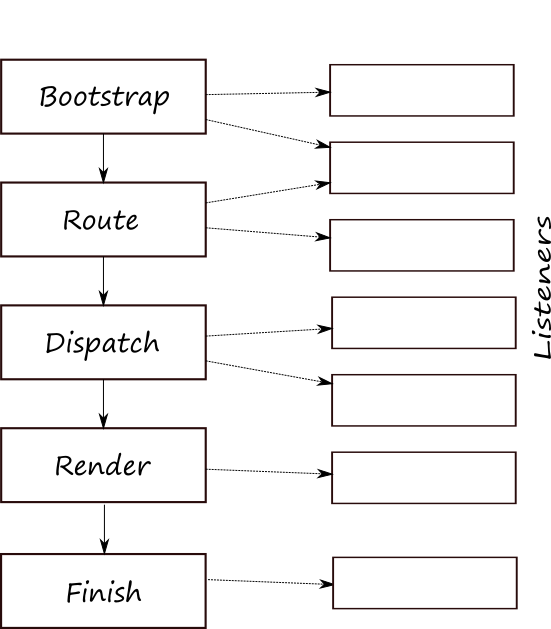

3.7. События и жизненный цикл приложения
Как вы поняли из предыдущего раздела, с каждым HTTP-запросом создается объект Zend\Mvc\Application.
Обычно веб-приложение живет меньше секунды (этого времени достаточно, чтобы сгенерировать HTTP-ответ).
"Жизненный цикл" приложения состоит из нескольких этапов.
Zend Framework 3 использует понятие событие. Класс может вызвать событие, и другие классы могут его обработать. Технически вызов события - это просто вызов функции обратного вызова ("callback") другого класса. Управление событиями реализовано внутри компонента
Zend\EventManager.
Каждый этап жизненного цикла приложения инициируется приложением путем вызова события (это событие
представлено классом MvcEvent, который "живет" в пространстве имен Zend\Mvc). Другие классы
(принадлежащие либо Zend Framework, либо вашему приложению) могут обработать события и отреагировать
соответствующим образом.
Ниже представлены пять основных этапов жизненного цикла приложения:
Начальная загрузка (Bootstrap). При вызове этого события, модуль может зарегистрировать себя
как обработчика будущих событий приложения в своей функции обратного вызова onBootstrap().
Маршрутизация (Route). При вызове этого события, запрашиваемый URL анализируется с помощью класса маршрутизации (как правило,
класса Zend\Router\Http\TreeRouteStack). Если удается найти полное совпадение между URL и маршрутом,
запрос передается классу контроллера этого маршрута.
Отправка (Dispatch). Класс контроллера "отправляет" запрос, используя соответствующий метод действия и создает данные, которые могут быть отображены на веб-странице.
Рендеринг (Render). В этом событии данные, созданные методом действия контроллера, передаются для визуализации классу
Zend\View\Renderer\PhpRenderer. Визуализатор использует файл
шаблона представления для создания HTML-страницы.
Финиш (Finish). В этом событии HTTP ответ отправляется обратно клиенту.
Последовательность событий представлена на рисунке 3.3:
 Рисунок 3.3. Последовательность событий в течение жизненного цикла приложения
Хотя это используется сравнительно редко, вы можете найти практические примеры обработки и реакции на событие в главе Создание нового модуля